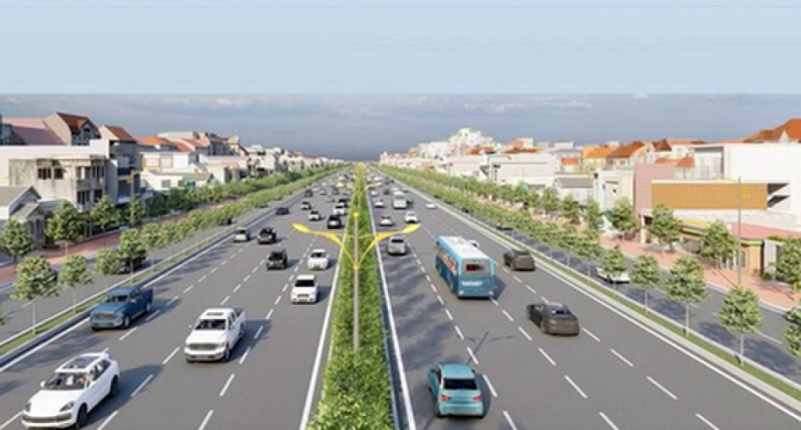

04/05/2023 15:22

Thanh tra và Quản lý giao thông là ngành đào tạo mới, cung cấp nguồn nhân lực cho lĩnh vực thanh tra và quản lý công trình giao thông. Chương trình đào tạo sinh viên nắm vững các kiến thức cơ bản về kinh tế - xã hội, chính trị, an ninh quốc phòng; có kiến thức khoa học cơ bản, cơ sở và chuyên sâu về Thanh tra và Quản lý công trình giao thông; sinh viên sẽ có khả năng thích ứng nhanh với những tiến bộ của khoa học công nghệ trong lĩnh vực Thanh tra và Quản lý công trình giao thông.
Mục tiêu đào tạo
Đào tạo kỹ sư Thanh tra và Quản lý giao thông có phẩm chất chính trị, đạo đức và sức khỏe tốt, có trách nhiệm với xã hội; nắm vững các kiến thức cơ bản về kinh tế - xã hội, chính trị, an ninh quốc phòng; có kiến thức khoa học cơ bản, cơ sở và chuyên sâu về Thanh tra và Quản lý công trình giao thông; có năng lực thực hành nghề nghiệp, năng lực nghiên cứu khoa học, năng lực tư duy sáng tạo, khả năng thích ứng nhanh với những tiến bộ của khoa học công nghệ trong lĩnh vực Thanh tra và Quản lý công trình giao thông; có kỹ năng tin học, tiếng Anh giao tiếp và tiếng Anh chuyên ngành thành thạo.
Vị trí và nơi làm việc sau khi tốt nghiệp
- Thanh tra và Quản lý công trình giao thông trong các cơ quan chức năng.
- Kỹ sư tư vấn tại các đơn vị tư vấn, thiết kế, giám sát.
- Kỹ sư thi công trong các công ty xây dựng công trình giao thông, công trình xây dựng ở trong và ngoài nước.
- Cán bộ nghiên cứu trong các Viện nghiên cứu; giảng dạy trong các trường đại học, cao đẳng, trung học và dạy nghề.
Cấu trúc của chương trình đào tạo
| Kiến thức | Bắt buộc | Tự chọn | Khối lượng (Tín chỉ) |
|---|---|---|---|
| 1. Kiến thức giáo dục đại cương | 35 | 4 | 39 |
| 2. Kiến thức giáo dục chuyên nghiệp | 119 | 10 | 129 |
| 2.1. Kiến thức cơ sở ngành | 40 | 4 | 44 |
| 2.2. Kiến thức ngành | 50 | 6 | 56 |
| 2.3. Thực hành, thực tập nghề nghiệp | 17 | 17 | |
| 2.4. Thực tập tốt nghiệp | 4 | 4 | |
| 2.5. Đồ án tốt nghiệp | 8 | 8 | |
| Tổng số | 154 | 14 | 168 |
Cơ hội tiếp tục học tập
- Thanh tra và Quản lý công trình giao thông trong các cơ quan chức năng.
- Kỹ sư tư vấn tại các đơn vị tư vấn, thiết kế, giám sát.
- Kỹ sư thi công trong các công ty xây dựng công trình giao thông, công trình xây dựng ở trong và ngoài nước.
- Cán bộ nghiên cứu trong các Viện nghiên cứu; giảng dạy trong các trường đại học, cao đẳng, trung học và dạy nghề.